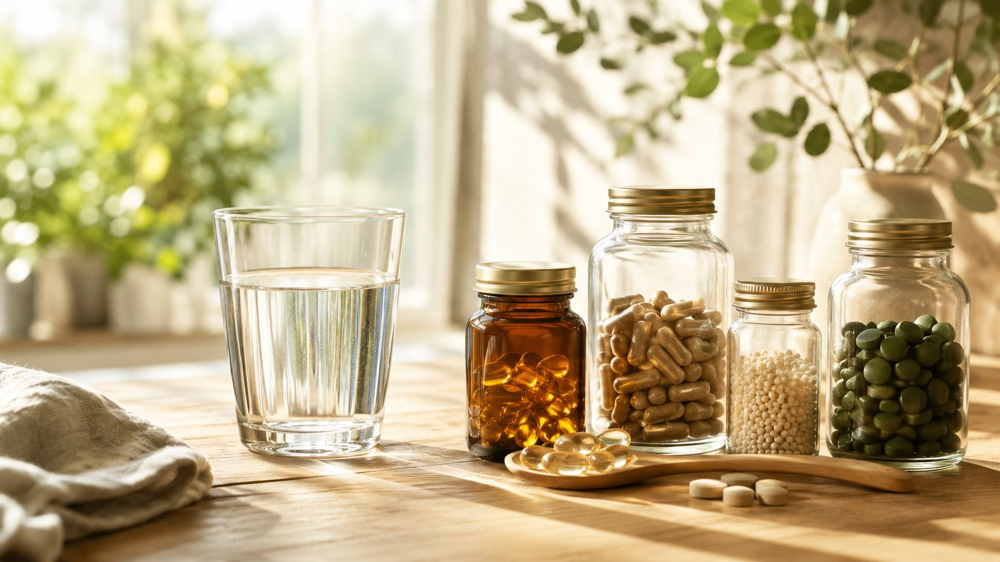

健康・予防医療ニュース
「濃いサプリほど効く」は本当？最新レポートに学ぶ、栄養と体内環境の関係
サプリ市場1.2兆円時代でも健康不安が減らない理由——成分だけでなく呼吸・睡眠という体内環境に着目した最新レポートを紹介します。
2026年6月22日
健康・予防医療ニュース
「血流が良くなれば健康になる」は本当？最新レポートに学ぶ、健康の土台づくり
体表の血流や温度を上げることと、自律神経が整うことは同じではない——最新レポートが示す「健康の上流」について、わかりやすく解説します。
2026年6月18日
今後も健康・予防医療に関する話題を順次追加してまいります。